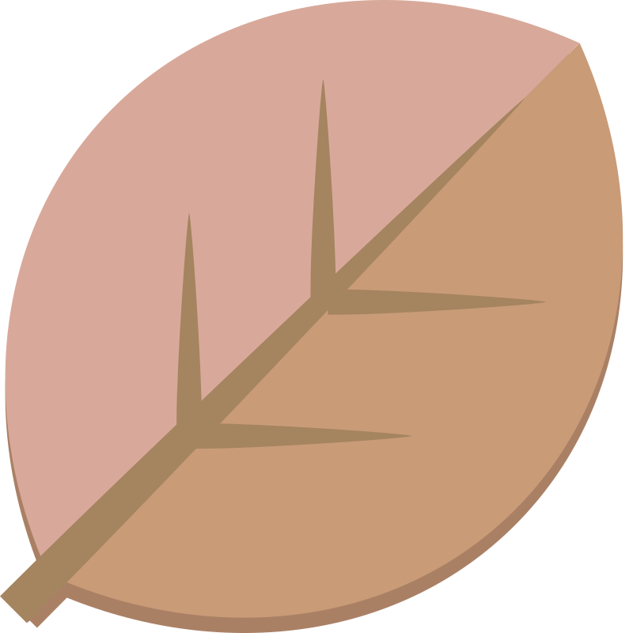
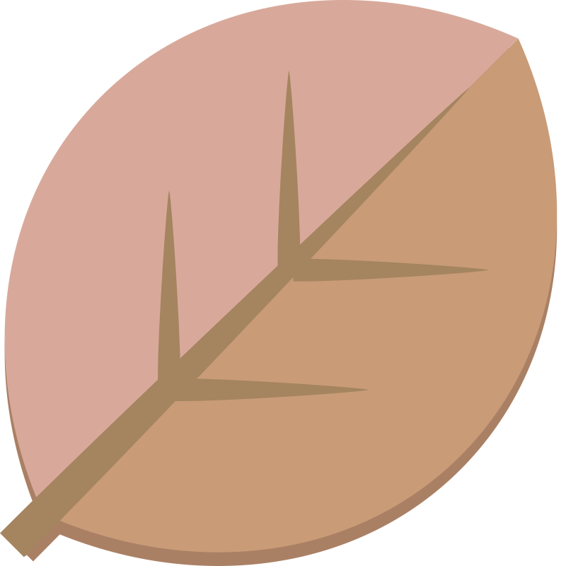

Merhabalar; Merhaba, ben Serhat Har Aksaray'da doğdum ve yaşıyorum, bilgisayar mühendisliği 1. sınıf öğrencisiyim. 19 yaşındayım ve bilgisayarlara olan ilgim babamın 6 yaşındayken bana aldığı laptop ile başladı. O zamanlar, sadece oyun oynamak gibi temel şeylerle meşguldüm. Ancak lise yıllarıma geldiğimde, bir dönüm noktasıyla karşılaştım: Python programlama dersi. Bu ders, bilgisayar dünyasına olan ilgimi derinleştirdi ve daha karmaşık ve heyecan verici bir dünyayı keşfetmemi sağladı. Hatta daha sadece 9. sınıfta hangi bölümü okumak istediğime karar vermiştim bile. Şu anda üniversitenin ilk yılındayım ve hem yeni arkadaşlarla tanışmanın heyecanını yaşıyorum hem de kendimi bilgisayar mühendisliği alanında geliştirmeye devam ediyorum. Bu süreçte, programlama dillerinde ve bilgisayar teknolojilerinde daha derinlemesine bilgi edinmek için çaba gösteriyorum. Aynı zamanda, projelerde yer alarak pratik deneyim kazanıyor ve sınıf içi çalışmalarla teorik bilgilerimi pekiştiriyorum. Gelecekte, bilgisayar dünyasında daha da ileri gitmeyi ve yeni teknolojilerin gelişimine katkıda bulunmayı umuyorum.